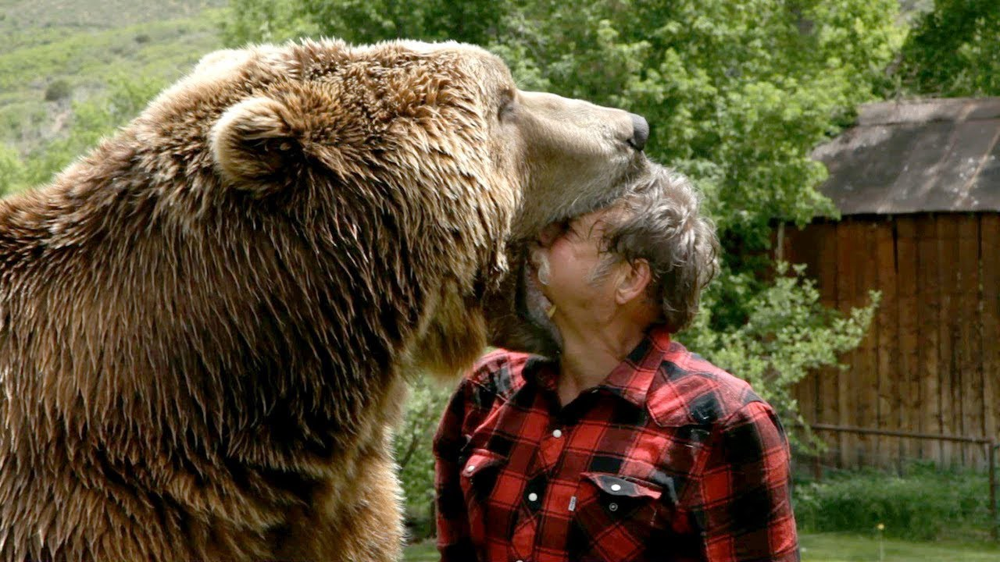
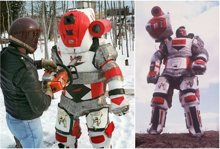
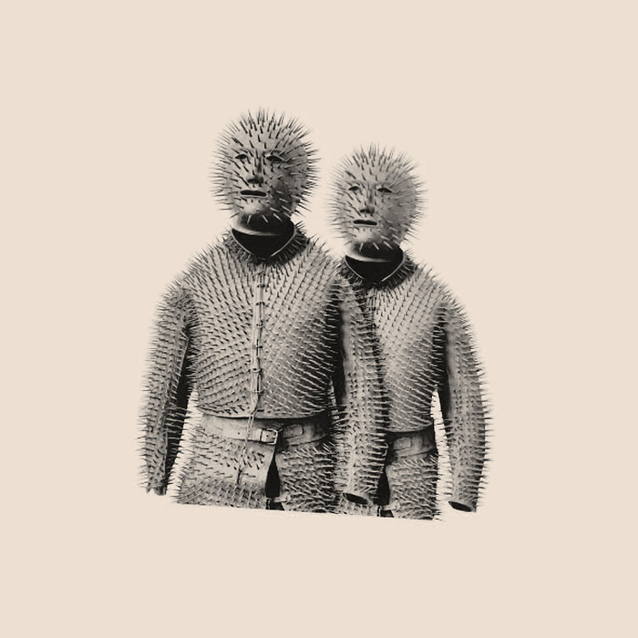

Bear attacks

Bear attacks are rare, but they can be serious and even deadly.
It is important to be cautious and aware of your surroundings when you are in bear country.
If you encounter a bear, try to stay calm and do not approach it.
Make yourself look as large as possible and make noise to let the bear know you are there.
If the bear charges or attacks, use bear spray or another deterrent if you have it, and try to get away by backing away slowly.
If the bear makes contact, fight back with any available objects or use your fists to hit the bear's face and muzzle.
It is important to remember that bears are wild animals and should be treated with respect and caution.
There have been a total of 1,567 bear attacks in the United States between 1900 and 2021. Of these attacks, 696 resulted in injuries and 63 resulted in fatalities.
The majority of bear attacks occurred in Alaska, where bears are more abundant and people are more likely to encounter them. The states with the next highest number of bear attacks were California, Colorado, and Montana.
Most bear attacks occurred when bears were defending themselves or their food, or when people surprised or approached bears too closely.
It is important to remember that bear attacks are rare, and can often be avoided by taking precautions such as making noise while hiking and storing food properly while camping.
"Project Grizzly"

"Project Grizzly" is a 1996 documentary film that follows the journey of Troy Hurtubise, a Canadian inventor and bear enthusiast, as he tests his bear-proof suit, the "Ursus Mark VII."
The film documents Hurtubise's efforts to protect himself and others from bear attacks by designing and testing the suit, which is made of materials such as kevlar and steel.
The film also explores Hurtubise's fascination with bears and his desire to understand and coexist with these powerful creatures. Project Grizzly received critical acclaim for its unique and entertaining portrayal of Hurtubise's unconventional approach to bear safety.
"Siberian Bear Hunting Suit"

The Siberian bear hunting suit is a specialized piece of equipment used by hunters to protect themselves while hunting bears in Russia.
It is made of heavy-duty materials such as steel and kevlar, and is designed to withstand the claws and teeth of a bear.
The suit includes a face shield and a thick layer of padding to protect the hunter's body.
It is typically used in conjunction with a rifle or other hunting weapon.
The use of the Siberian bear hunting suit has been controversial, with some arguing that it gives hunters an unfair advantage over bears and allows them to hunt bears more aggressively.
Others argue that the suit is necessary for the safety of the hunter, who may be at risk of serious injury or death in a bear attack.